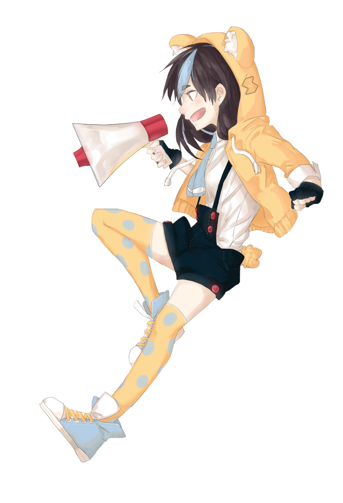
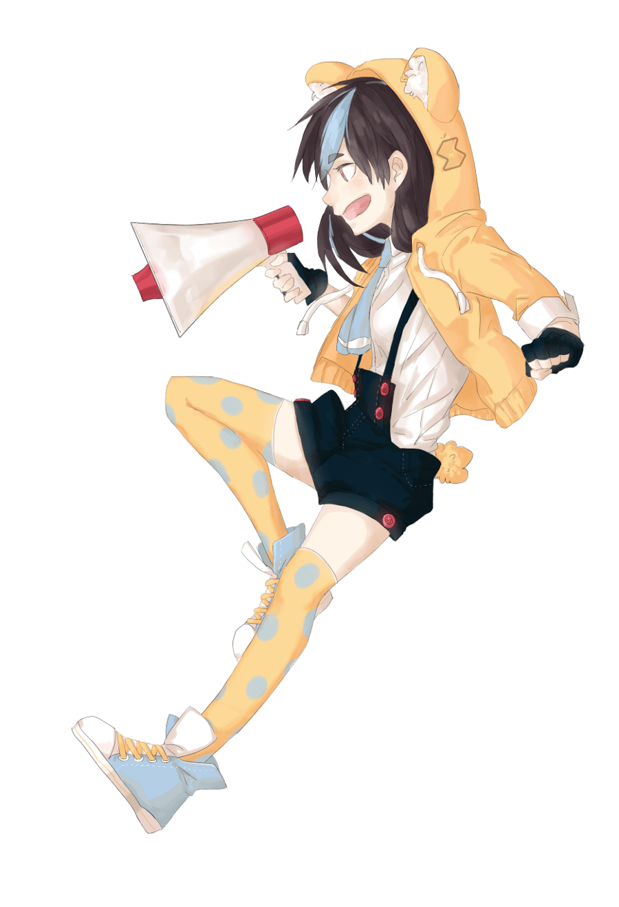
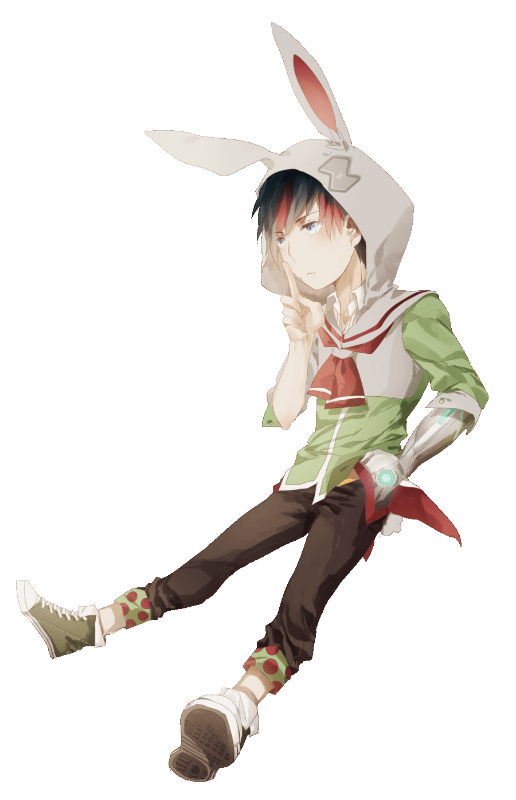

Let's Open Source !!
生活周遭，你知道多少東西是基於「開源精神」而讓你有所受惠的？自 1998 年 Tim O'Reilly 提出「Open Source」的概念之後，開源產品正一點一滴的影響著我們的日常：Linux、7-Zip、Firefox，甚至非技術導向的維基百科，都是開源精神的一種體現。「星星之火，可以燎原」，透過公開與群眾力量的整合，開源經常可以在很短的時間內做到一個人所做不到的事情。
開源的開發過程中，最重要的就是眾人的參與。大家一同發揮與貢獻自己的力量，作出貢獻，才會有成果產出。「Every contribution counts」，每一筆貢獻都有其獨特的價值。在享受開源帶來的種種便利時，除了不可以忘記貢獻者們的心血投注，更可以貢獻自己的力量，一同讓專案更臻完善。
「個人」不能置身於「群體」之外，透過自己的力量一起讓整個群體變好，個人也才能更好。這樣的理念除了在資訊領域開始發光發熱之外，現今更已經發展到其他許多領域中，倡導群眾一同參與貢獻。因此，這次的年會除了延續之前對於「學生與創新實作」的推廣之外，也希望讓參與的學生與民眾了解開源精神的思想，更重要的是如何參與開源並有所貢獻。因為你的一小步，將會是開源的一大步！
Let’s Open Source，讓我們一起開源！
Innovation & Implementation
SITCON 一直以來鼓勵參與者培養動手做的能力與習慣，2016 年也不例外，所有議程仍會著重在「學生與創新實作」相關議題。
About Us
SITCON 學生計算機年會係一學生自發組成的研討會，秉持著以學生為主軸的核心價值，藉以凝聚與傳遞學生的力量。希望藉由提供一個經驗交流與資訊技術實務分享的平台，使已有成就者能夠傳承己身經驗，嶄露頭角者在激盪中獲得靈感與啟發，並同時讓初入茅廬者得以對資訊科學有更深入的了解；進而達到「學以致用、教學相長」的目標。
行為準則 / Code of Conduct
SITCON 冀望打造屬於學生自己的舞台，而我們也致力於為社群中的每位成員提供更友善、開放的環境。我們相信每位參與社群活動的夥伴都值得被尊重，而我們會盡力提供最安全的環境，讓參與 SITCON 盛會的每位朋友能夠認識個體間的差異、在社群中相互扶助、並鼓勵每個人揮灑屬於自己生命的色彩。 因此，若有幸能在 SITCON 社群與您見面，無論您是以會眾、贊助商、工作人員、或是講者的身份參加活動，我們都希望您遵守以下的行為準則：
- 尊重每一位參與者，將對方的感受放在心上。
- 避免使用帶有侮辱、歧視、或具有潛在騷擾意涵的言語及手勢。
- 多關心周遭的社群夥伴，適度詢問對方是否需要協助。
- 當遭遇危險、或發現事情不對勁時，適時尋求工作人員的支援與協助。
- 在年會裡多交朋友，珍惜彼此相聚的時光！
以下的行為是不被社群所容忍的：
- 針對性別、性向、種族、外貌、宗教、年齡、身體狀況或個人身份的挑釁或冒犯。
- 任何形式的性騷擾、言語及肢體霸凌。
- 公開發表、展示或放映含有侮辱、歧視、仇恨、暴力、或是性暗示的言論、影像、或錄影。
- 無故干擾議程或活動的正常進行，無視工作人員或會眾的制止。
- 干擾、攻擊會場網路，未經同意側錄封包或散佈隱私資訊。
- 違反法律的行為。
為了確保每位參與者的安全，我們將恪守以上規則。違反行為準則的參與者，我們將採取必要且合理的手段予以介入，包含但不限於將參與者請離現場、自相關名冊除名或列為不受歡迎對象，或在必要時移送警察機關法辦。若您或他人遇到了以上情況、或是有任何其他顧慮，都請立即尋求 SITCON 工作人員的協助。 我們誠摯的邀請來到 SITCON 的朋友一同履行以上承諾，將 SITCON 打造為更友善、更溫暖的所在；讓每一位參與者，都能在社群的交流中共同成長、在人與人的互動中找到自信——而這正是我們所珍惜的、屬於學生社群的真正精神。
